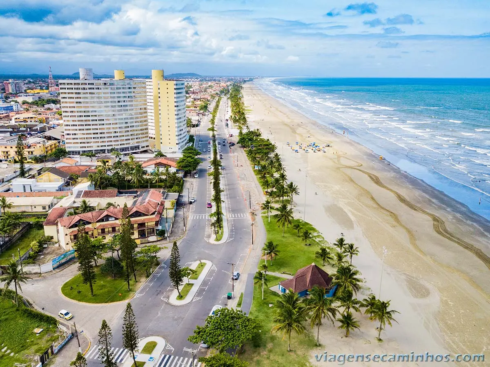

Peruíbe

A origem de Peruibe está vinculada a história de São Vicente e, em especial, à trajetória dos jesuitas pelo litoral do Estado de São Paulo.
No século XVI, uma missão jesuitica estabeleceu-se no local que recebeu o nome de Aldeamento de São João Batista, ou São João da Aldeia, cujo objetivo, além de converter e pacificar os indios Carijós e Tamoios, que viviam ao sul da capitania de Itanhaém, era o de servir como pouso a viajantes. Situava-se em uma região estratégica na defesa contra investidas de corsários.
No final do século XVIII. com a expulsão dos padres jesuitas, a aldeia passou a ser administrada pelos franciscanos o núcleo de Peruibe entrou em declinio.
Só retomou o desenvolvimento como cidade balneária em meados do século XX, quando foi transformada por lei, em 18 de fevereiro de 1959, em distrito e municipio, com território desmembrado de Itanhaém. Peruibe, em tupi-guarani, significa "no rio dos tubarões".
Consta, porém, de alguns documentos que esse nome estaria associado ao modo como José de Anchieta se referia ao lugar, chamando-o de Tapirema do Peru, por suas semelhanças com a região peruana, onde os jesuitas haviam enfrentado dificuldades no exercício da catequese.